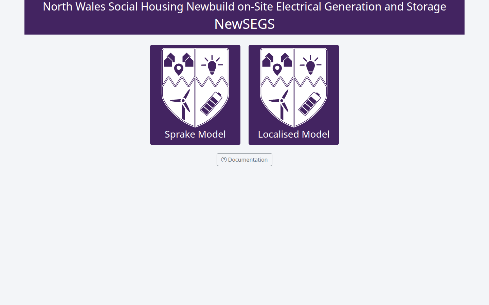
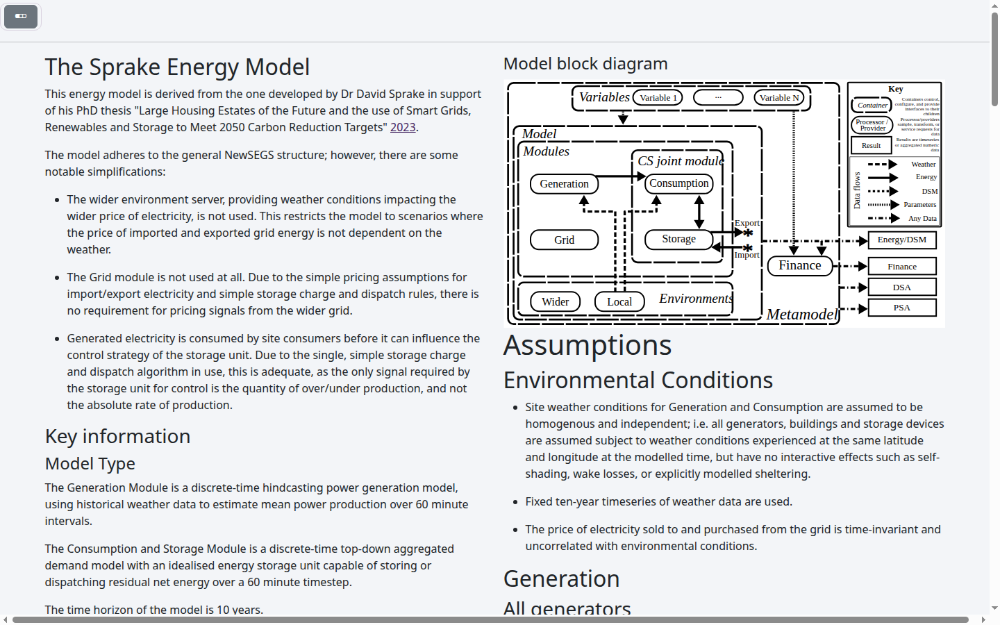
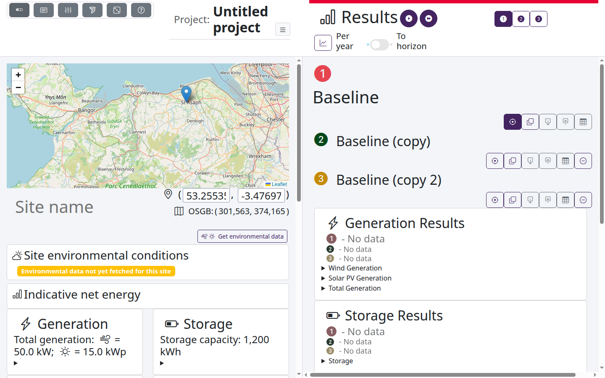
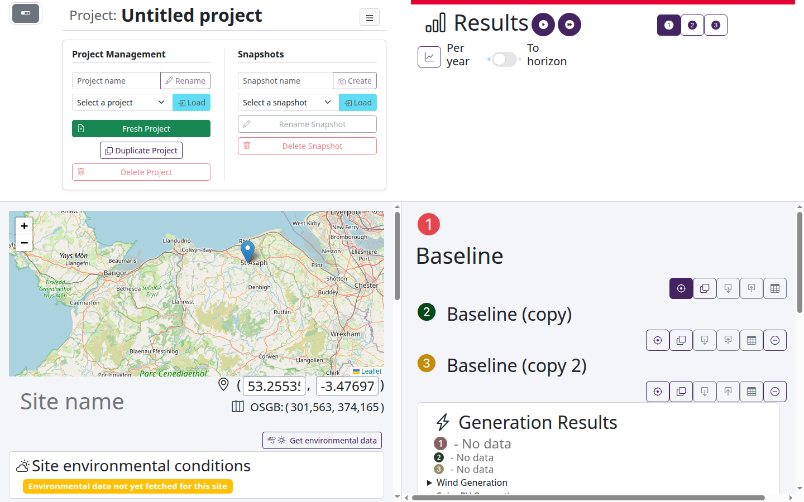
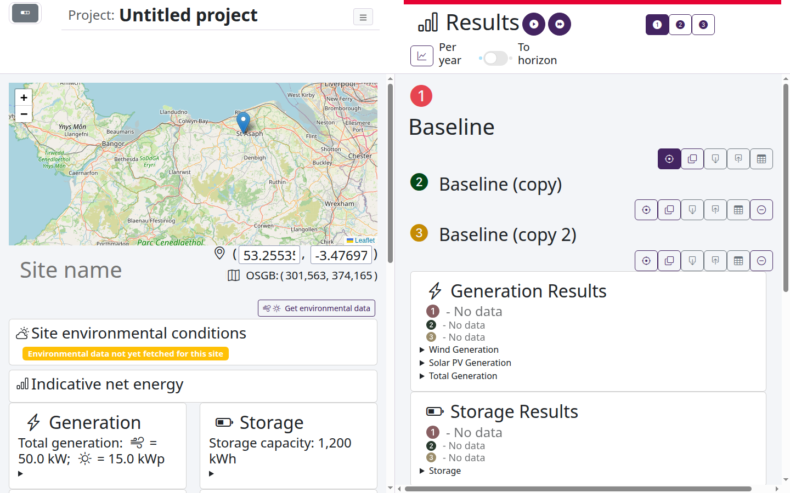
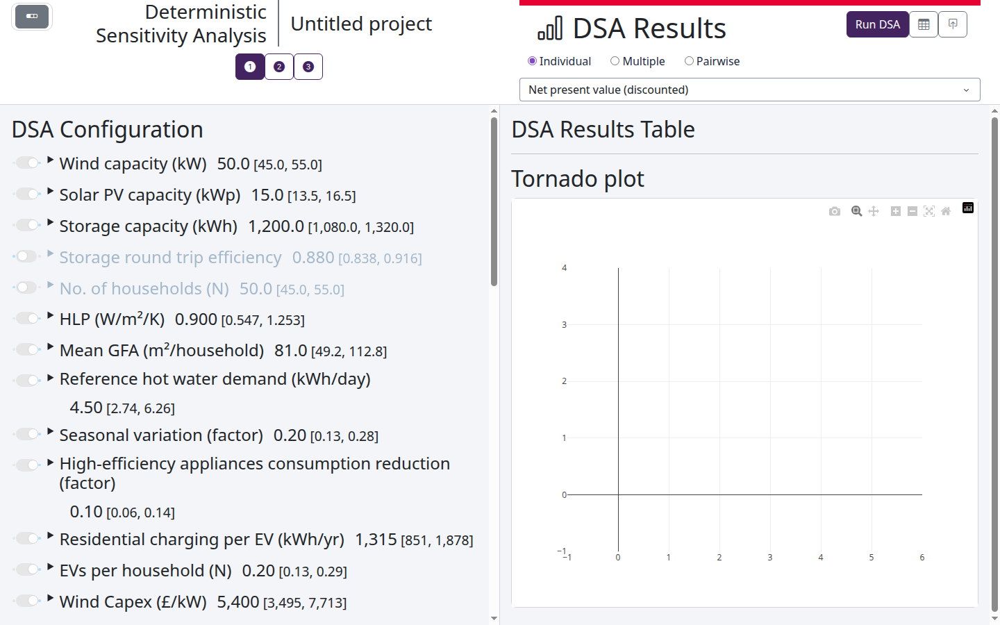
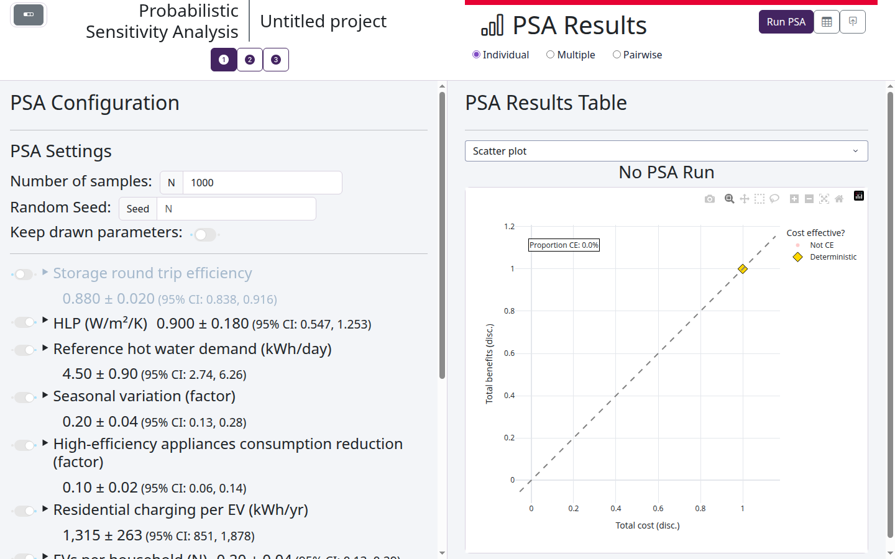

User Guide¶
Introduction¶
This guide gives an overview of the interactions and capabilities of the NewSEGS modelling framework as accessed via the web app. If you are looking for how to create your own models or run calculations in python, start with Modelling principles.
The guide will take you through the following actions:
- Starting the app.
- Selecting a model type.
- Setting up a project.
- Setting up a configuration.
- Running deterministic analyses.
- Optimising
- Running deterministic sensitivity analyses (DSA).
- Running probabilistic sensitivity analyses (PSA).
Key terms¶
| Term | Meaning |
|---|---|
| Model type | The energy model used, e.g. the Sprake model or the localised model. Each model type has its own projects. |
| Project | A set of configurations to compare. The app keeps your project between visits. |
| Configuration | One option for a site: its generation, storage, consumption and costs. Each configuration has a number and a colour, used in every input, header and plot. The first, Baseline, can't be moved or removed. |
| Snapshot | A saved copy of a project, which can be restored as a new project. |
| Deterministic run | A run of a configuration with the central value of every input. |
| DSA | Deterministic sensitivity analysis: runs with each selected input at its lower and upper bound in turn, to show which inputs matter most. |
| PSA | Probabilistic sensitivity analysis: many runs with the inputs drawn from their distributions, to show the spread of the results. |
Starting the app¶
The app runs in a web browser. See Install and run to start it, with Docker or without.
Once it is running, open http://localhost:8050.
Selecting a model type¶
The first page offers the model types. Click one to open its landing page. The Documentation button opens this documentation.

The landing page describes the model: its structure, assumptions and the data it uses.

Moving between pages¶
The button at the top left of each page opens the navigation bar. Its buttons go to the landing page, the site configuration, the sensitivity analysis (DSA and optimisation) and the probabilistic analysis (PSA) pages, and to this documentation.

Setting up a project¶
The app opens your last project of the model type, or a new project if you have none. Its name is shown at the top of each page. The button beside the name opens the project controls:
- Project management: rename the project, load another, start a fresh project, duplicate this one, or delete it.
- Snapshots: save a snapshot of the project, and load, rename or delete snapshots. Loading a snapshot restores it as a new project.

Give each project a meaningful name: new projects are called Untitled project.
Setting up a configuration¶
The site configuration page holds the inputs of the focussed configuration, on the left, and the results of every configuration, on the right.

- Configurations: the list under Results shows every configuration of the project. Its buttons focus a configuration (so its inputs are shown), duplicate it, download or upload it as a file, download its results, and remove it. A copy is named after its source, e.g. Baseline (copy); type a meaningful name in its name box.
- Site: for the localised model, choose the site on the map or by its latitude and longitude, and give it a name. Get environmental data fetches the weather data of the site and shows its wind and solar conditions. The first fetch for a site can take several minutes.
- Inputs: each section of inputs (generation, storage, consumption, costs...) can be opened to change its values. When configurations share an input, opening its summary shows the groups of configurations with the same value, and lets you move configurations between them.
Running deterministic analyses¶
The run buttons beside Results run the focussed configuration, or every configuration. Progress is shown over the results while the run is under way. When it completes, the results of each configuration are shown in its colour: generation, storage, consumption and finance, per year or to the horizon of the model (the toggle under Results).
Results go out of date when an input they depend on changes; the header of each result shows when they are.
Optimising the configuration¶
The sensitivity analysis page also holds the optimisation. Choose the inputs to optimise and their bounds, and the statistic to optimise, then start the optimisation. When it finishes, the app reports what the optimisation achieved and, if it found an improvement, applies it to the configuration.
Running deterministic sensitivity analyses (DSA)¶
On the sensitivity analysis page, choose the inputs to vary with their toggles, and their lower and upper bounds. Run DSA runs the focussed configuration, or every configuration, with each input at its bounds in turn.

The results are shown as a table and a tornado plot of the chosen statistic. Multiple compares the configurations, and Pairwise compares one configuration with a reference.
Running probabilistic sensitivity analyses (PSA)¶
On the probabilistic analysis page, set the number of samples and the random seed, and choose the inputs to draw, with their distributions. Run PSA runs the configurations for each draw.

The results are shown as plots, chosen from the list above them, such as a scatter of costs and benefits, and as tables. As for the DSA, Multiple and Pairwise compare configurations.